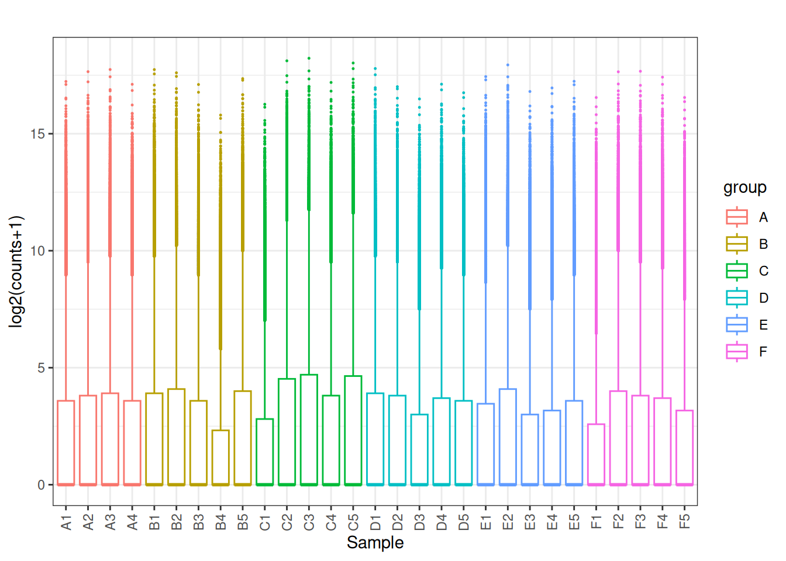
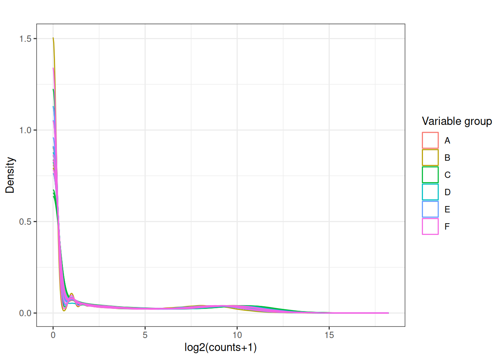
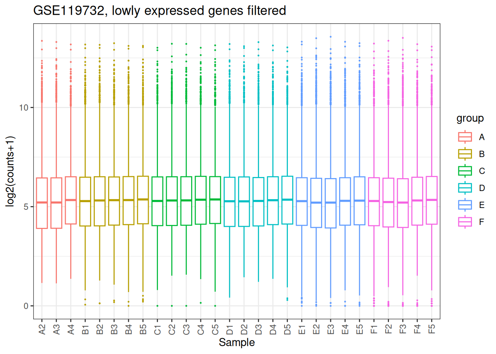
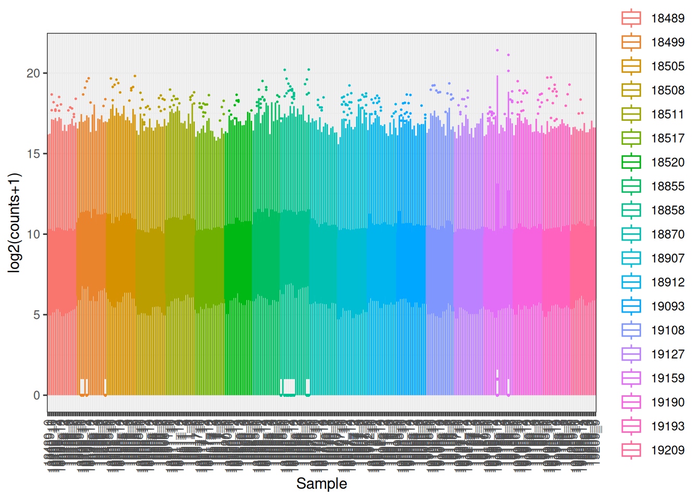
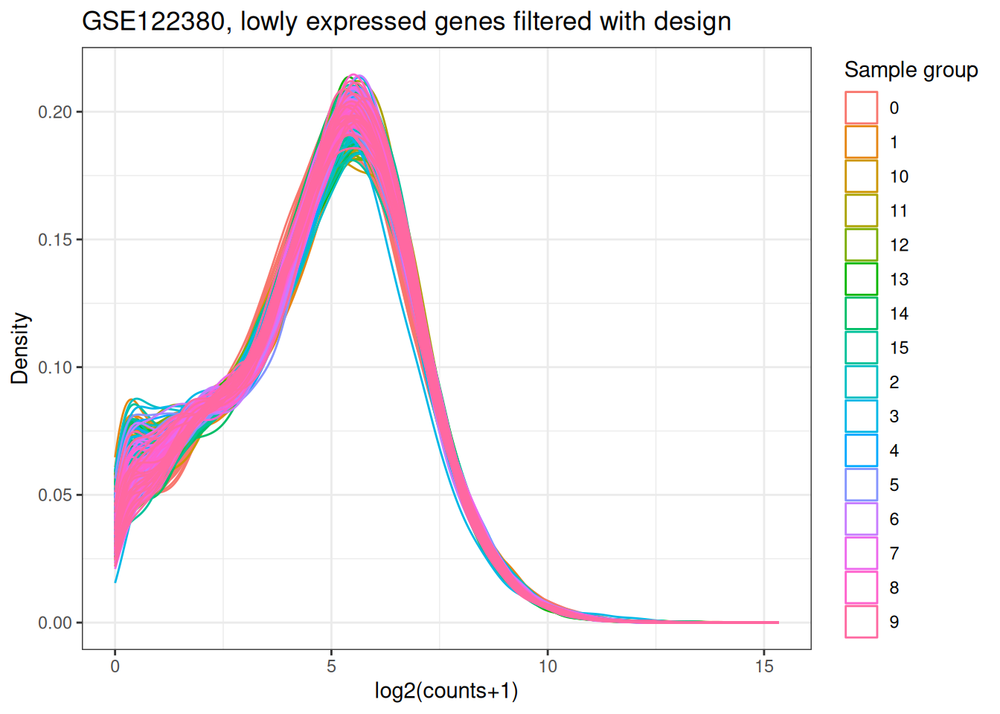

Chapter 6 Exercises
These are intended to be done after completing the worked examples.
6.1 Exercise 1 — https://www.ncbi.nlm.nih.gov/geo/query/acc.cgi?acc=GSE119732
Using GSE119732,
- Map the distribution of the samples as a box plot and a density plot using only the raw data.
- Add colours to the plot separating the different variables in the model
- Filter out lowly expressed genes and re plot the distributions.
## Loading required package: Biobase## Loading required package: BiocGenerics## Loading required package: generics##
## Attaching package: 'generics'## The following objects are masked from 'package:base':
##
## as.difftime, as.factor, as.ordered, intersect, is.element, setdiff,
## setequal, union##
## Attaching package: 'BiocGenerics'## The following objects are masked from 'package:stats':
##
## IQR, mad, sd, var, xtabs## The following objects are masked from 'package:base':
##
## anyDuplicated, aperm, append, as.data.frame, basename, cbind,
## colnames, dirname, do.call, duplicated, eval, evalq, Filter, Find,
## get, grep, grepl, is.unsorted, lapply, Map, mapply, match, mget,
## order, paste, pmax, pmax.int, pmin, pmin.int, Position, rank,
## rbind, Reduce, rownames, sapply, saveRDS, table, tapply, unique,
## unsplit, which.max, which.min## Welcome to Bioconductor
##
## Vignettes contain introductory material; view with
## 'browseVignettes()'. To cite Bioconductor, see
## 'citation("Biobase")', and for packages 'citation("pkgname")'.## Setting options('download.file.method.GEOquery'='auto')## Setting options('GEOquery.inmemory.gpl'=FALSE)##
## Attaching package: 'dplyr'## The following object is masked from 'package:Biobase':
##
## combine## The following objects are masked from 'package:BiocGenerics':
##
## combine, intersect, setdiff, setequal, union## The following object is masked from 'package:generics':
##
## explain## The following objects are masked from 'package:stats':
##
## filter, lag## The following objects are masked from 'package:base':
##
## intersect, setdiff, setequal, union## ── Attaching core tidyverse packages ──────────────────────── tidyverse 2.0.0 ──
## ✔ forcats 1.0.1 ✔ purrr 1.2.0
## ✔ ggplot2 4.0.1 ✔ stringr 1.6.0
## ✔ lubridate 1.9.4 ✔ tidyr 1.3.1## ── Conflicts ────────────────────────────────────────── tidyverse_conflicts() ──
## ✖ dplyr::combine() masks Biobase::combine(), BiocGenerics::combine()
## ✖ dplyr::filter() masks stats::filter()
## ✖ dplyr::lag() masks stats::lag()
## ✖ ggplot2::Position() masks BiocGenerics::Position(), base::Position()
## ℹ Use the conflicted package (<http://conflicted.r-lib.org/>) to force all conflicts to become errorslibrary(ggplot2)
source("./supp_functions.R") # Load in the required functions
gse <- "GSE119732"
path <- file.path("data", gse)
files <- list.files(path, pattern = "\\.txt.gz$|\\.tsv.gz$|\\.csv.gz$",
full.names = TRUE, recursive = TRUE)
x <- safe_read(files[1])
plot_box_1(x[,2:ncol(x)])

## Loading required package: limma##
## Attaching package: 'limma'## The following object is masked from 'package:BiocGenerics':
##
## plotMAx_cpm <- cpm(y = x[,2:ncol(x)]) # Normalise for library size
to_remove <- edgeR::filterByExpr(x_cpm,min.count = 3) # Filter lowly expressed genes## No group or design set. Assuming all samples belong to one group.x_cpm_filtered <- x_cpm[to_remove,]
plot_box_1(x_cpm_filtered[,2:ncol(x_cpm_filtered)], main = "GSE119732, lowly expressed genes filtered")
plot_density_1(x_cpm_filtered[,2:ncol(x_cpm_filtered)], main = "GSE119732, lowly expressed genes filtered")
6.2 Exercise 2 — https://www.ncbi.nlm.nih.gov/geo/query/acc.cgi?acc=GSE122380
Using GSE122380, confirm whether the ID column contains Ensembl IDs with version suffixes.
- Map the distribution of the samples as a box plot and a density plot using only the raw data.
- Add colours to the plot separating the different variables in the model
- Filter out lowly expressed genes and re plot the distributions.
## Using locally cached version of supplementary file(s) GSE122380 found here:
## data/GSE122380/GSE122380_Supplementary_Data_Table_S1.xlsx## Using locally cached version of supplementary file(s) GSE122380 found here:
## data/GSE122380/GSE122380_raw_counts.txt.gzpath <- file.path("data", gse)
files <- list.files(path, pattern = "\\.txt.gz$|\\.tsv.gz$|\\.csv.gz$",
full.names = TRUE, recursive = TRUE)
x <- safe_read(files[1])## Warning: One or more parsing issues, call `problems()` on your data frame for details,
## e.g.:
## dat <- vroom(...)
## problems(dat)## Parsing issues detected in TSV — reading as space-delimited file instead.

## [1] "Gene_id" "18489_0" "18489_10" "18489_11" "18489_12" "18489_13"
## [7] "18489_14" "18489_15" "18489_1" "18489_2" "18489_3" "18489_4"
## [13] "18489_5" "18489_6" "18489_7" "18489_8" "18489_9" "18499_0"
## [19] "18499_10" "18499_11" "18499_12" "18499_13" "18499_14" "18499_15"
## [25] "18499_1" "18499_2" "18499_3" "18499_4" "18499_5" "18499_6"
## [31] "18499_7" "18499_8" "18499_9" "18505_0" "18505_10" "18505_11"
## [37] "18505_12" "18505_13" "18505_14" "18505_15" "18505_1" "18505_2"
## [43] "18505_3" "18505_4" "18505_5" "18505_6" "18505_7" "18505_8"
## [49] "18505_9" "18508_0" "18508_10" "18508_11" "18508_12" "18508_13"
## [55] "18508_14" "18508_15" "18508_1" "18508_2" "18508_3" "18508_4"
## [61] "18508_5" "18508_6" "18508_7" "18508_8" "18508_9" "18511_0"
## [67] "18511_10" "18511_11" "18511_12" "18511_13" "18511_14" "18511_15"
## [73] "18511_1" "18511_2" "18511_3" "18511_4" "18511_5" "18511_6"
## [79] "18511_7" "18511_8" "18511_9" "18517_0" "18517_10" "18517_11"
## [85] "18517_12" "18517_13" "18517_14" "18517_15" "18517_1" "18517_2"
## [91] "18517_3" "18517_4" "18517_5" "18517_6" "18517_7" "18517_8"
## [97] "18517_9" "18520_0" "18520_10" "18520_11" "18520_12" "18520_13"
## [103] "18520_14" "18520_15" "18520_1" "18520_3" "18520_4" "18520_5"
## [109] "18520_6" "18520_7" "18520_8" "18520_9" "18855_0" "18855_10"
## [115] "18855_11" "18855_12" "18855_13" "18855_14" "18855_15" "18855_1"
## [121] "18855_3" "18855_4" "18855_5" "18855_6" "18855_7" "18855_8"
## [127] "18855_9" "18858_0" "18858_10" "18858_11" "18858_12" "18858_13"
## [133] "18858_14" "18858_15" "18858_1" "18858_2" "18858_3" "18858_4"
## [139] "18858_5" "18858_6" "18858_7" "18858_8" "18858_9" "18870_0"
## [145] "18870_10" "18870_11" "18870_12" "18870_13" "18870_14" "18870_15"
## [151] "18870_1" "18870_2" "18870_3" "18870_5" "18870_6" "18870_7"
## [157] "18870_8" "18870_9" "18907_0" "18907_10" "18907_11" "18907_12"
## [163] "18907_13" "18907_14" "18907_15" "18907_1" "18907_2" "18907_3"
## [169] "18907_4" "18907_5" "18907_6" "18907_7" "18907_8" "18907_9"
## [175] "18912_0" "18912_10" "18912_11" "18912_12" "18912_13" "18912_14"
## [181] "18912_15" "18912_1" "18912_2" "18912_3" "18912_4" "18912_5"
## [187] "18912_6" "18912_7" "18912_8" "18912_9" "19093_0" "19093_10"
## [193] "19093_11" "19093_12" "19093_13" "19093_14" "19093_15" "19093_1"
## [199] "19093_2" "19093_3" "19093_4" "19093_5" "19093_6" "19093_7"
## [205] "19093_8" "19093_9" "19108_0" "19108_10" "19108_11" "19108_12"
## [211] "19108_13" "19108_14" "19108_15" "19108_1" "19108_2" "19108_3"
## [217] "19108_5" "19108_6" "19108_7" "19108_8" "19108_9" "19127_0"
## [223] "19127_10" "19127_11" "19127_12" "19127_13" "19127_14" "19127_15"
## [229] "19127_1" "19127_2" "19127_3" "19127_4" "19127_5" "19127_6"
## [235] "19127_7" "19127_8" "19127_9" "19159_0" "19159_10" "19159_11"
## [241] "19159_12" "19159_13" "19159_14" "19159_15" "19159_1" "19159_2"
## [247] "19159_3" "19159_4" "19159_5" "19159_6" "19159_7" "19159_8"
## [253] "19159_9" "19190_0" "19190_10" "19190_11" "19190_12" "19190_13"
## [259] "19190_14" "19190_15" "19190_1" "19190_2" "19190_3" "19190_4"
## [265] "19190_5" "19190_6" "19190_7" "19190_8" "19190_9" "19193_0"
## [271] "19193_10" "19193_11" "19193_12" "19193_13" "19193_14" "19193_15"
## [277] "19193_1" "19193_2" "19193_3" "19193_5" "19193_6" "19193_7"
## [283] "19193_8" "19193_9" "19209_0" "19209_10" "19209_11" "19209_12"
## [289] "19209_14" "19209_15" "19209_1" "19209_3" "19209_4" "19209_5"
## [295] "19209_6" "19209_7" "19209_8" "19209_9"samples <- colnames(x)[2:ncol(x)]
cell_line <- unlist(lapply(samples,FUN = function(x){unlist(strsplit(x,split = "_"))[1]}))
time <- unlist(lapply(samples,FUN = function(x){unlist(strsplit(x,split = "_"))[2]}))
sample_data <- data.frame(samples, cell_line, time)
design <- model.matrix(~ 0 + time, data = sample_data)
rownames(design) <- sample_data$samples
colnames(design) <- paste0("time", levels(factor(time)))
x_cpm <- cpm(y = x[,2:ncol(x)])
to_remove_withdesign <- filterByExpr(x_cpm, min.count = 3, design = design)
x_cpm_filtered_withdesign <- x_cpm[to_remove_withdesign,]
colnames(x_cpm_filtered_withdesign) <- paste(sample_data$time,
1:nrow(sample_data), sep = "_")
plot_box_2(x_cpm_filtered_withdesign,
main = "GSE122380, lowly expressed genes filtered with design")
plot_density_2(x_cpm_filtered_withdesign,
main = "GSE122380, lowly expressed genes filtered with design")
6.3 Exercise 3 -
Can you use the worked example to process the above two GEO records? How?
Yes, but we need to change things that are specific to each GEO record, such as the design matrix. Supplementary functions also are changed by adding new functions to compensate for the way different records organise different samples and variables.